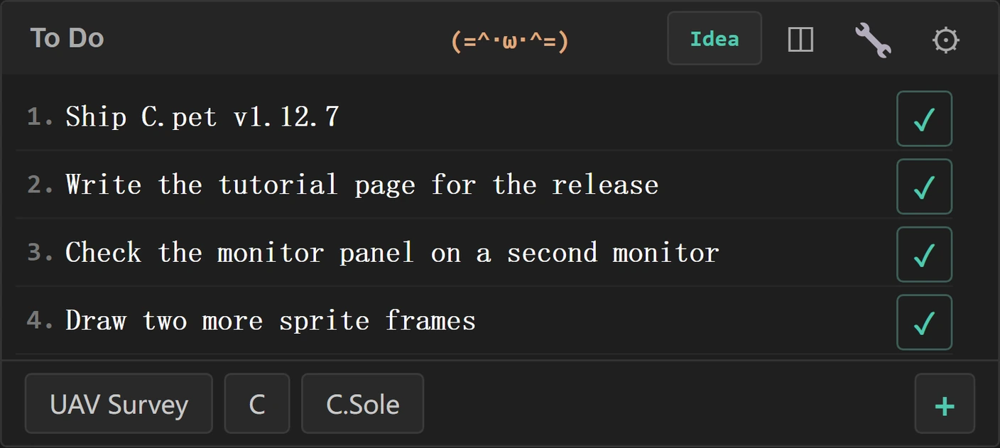
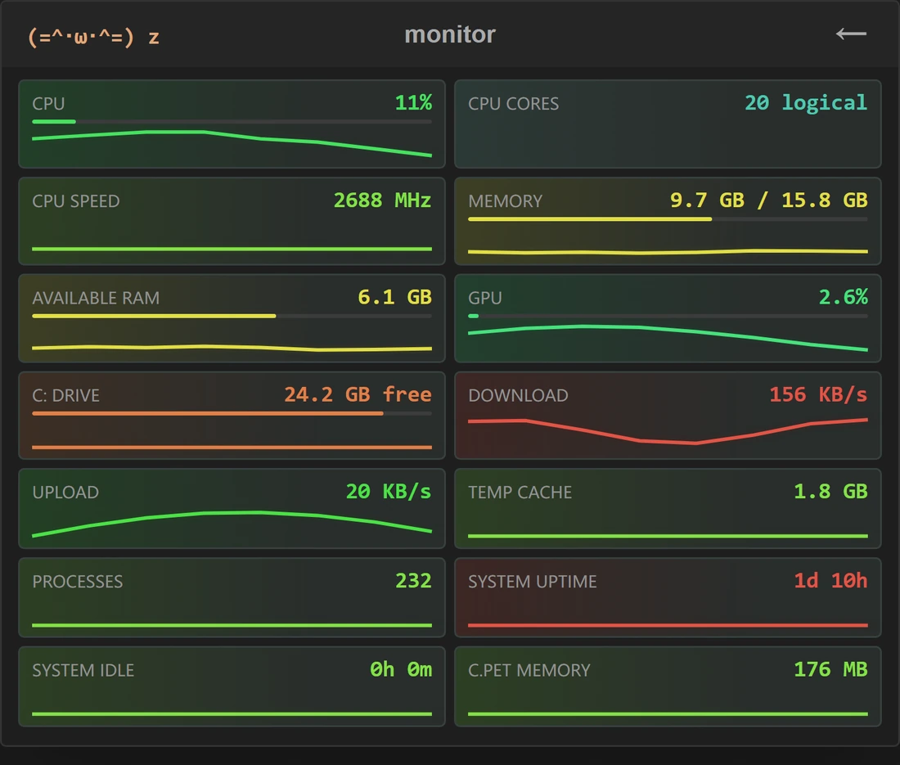

A desktop pet that
holds your to-dos
C.pet is a tiny transparent sprite that lives in the corner of your screen. Click it and a to-do list pops up. Close it and the pet goes back to scratching its head, yawning and giving you a thumbs up. There is also a system monitor and a launcher for local tools.

00What it is
Let's be clear about what it is not: it does not crawl across your screen, pop up ads, or nudge you with notifications. It sits quietly in the bottom-right corner and only shows up when you want to write something down — closer to a sticky note that happens to look like a person.
▸One click to start writing
Click the pet, the panel opens. Every keystroke is saved as you type — there is no save button and nothing to lose.
▸Never steals focus
The window is frameless, transparent and always on top, but it does not activate itself. It will not jump in front of your editor mid-sentence.
▸Can hide behind the taskbar
Hold Shift + ↓ and the pet slides down until only the top of its head is visible. Shift + ↑ brings it back.
▸Nothing leaves your machine
To-dos, settings and history live in %APPDATA%\c-pet. No account, no sync, no telemetry, no network code.
The character is a cartoon version of the author's self-portrait — that is why it wears round glasses and a white tee.
01Download & install
One exe. Double-click it. No installer, no Program Files, no admin rights.
Grab the exe
Download C.pet.exe (~78 MB, 64-bit Windows), or pick a version from the Releases page.
Put it somewhere permanent
For example D:\Tools\C.pet\C.pet.exe. The app keeps a C.pet.lnk next to itself and repoints pinned
taskbar shortcuts to that path, so avoid moving the file afterwards. If you do, just run it once from the new
location and it fixes itself.
Run it
First launch takes about a second. Then the pet appears in the bottom-right corner and a taskbar icon shows up. That's it — there is no step 5.
Windows may show "Windows protected your PC" the first time. That is not a virus warning — the exe is simply not code-signed (a certificate costs a few hundred dollars a year). Click More info → Run anyway. It will not ask again.
If you want to check the file: it is ~78 MB, and the SHA-256 is listed on the Releases page next to this version.
Uninstalling means deleting the exe. To remove everything, delete %APPDATA%\c-pet as well (paste the path into Win+R).
02Quick start
Three gestures are enough to get going: click the pet, type a line, hit the checkmark.
Click the pet
The to-do panel opens in the middle of the screen. On first run it already contains one empty row with the caret in it — just start typing.
Press Enter for the next line
Enter inserts a row below the current one. Backspace on an empty row removes it.
Click ✓ when it is done
The item moves into the completed database and an 8-second undo toast appears at the bottom. Clicked by accident? Hit Undo.
Click the pet again
The panel closes and the pet stays in its corner. Next time, press Ctrl + . to summon the panel without aiming at the sprite.

03Pet basics
Drag, scroll, click, press — four gestures cover everything the pet can do.
◈Drag to move
Grab the sprite anywhere and drag. The position is remembered across restarts, and it works across monitors.
◈Scroll to resize
Hover the pet and scroll: 20% to 135%, applied live. The settings panel has a slider too, plus a "reset to minimum size" button.
◈Nudge with the keyboard
After clicking the pet or the panel, Shift + arrow keys move it 4 px at a time. Only while C.pet is focused, so other apps keep normal text selection.
◈Hide behind the taskbar
Keep holding Shift + ↓ and the pet slides behind the taskbar until only its head peeks out.
15 actions, 9 effects
By default the pet switches to a random pose every 30 seconds: Idle, Scratch, Head, Akimbo, Thumb, Wave, Stretch, Yawn, Think, Clap, Point, Bow, Cheer, Giggle, Drowsy and Salute. Turn off "Auto actions" and it will simply stand there.
Effects add a CSS particle layer on top: Sparkles, Soft glow, Hearts, Fireflies, Rainbow aura, Rain, Snow and Sunshine. Purely decorative, and cheap enough to leave on.
When a fullscreen window takes over (a game, a video, a presentation), the pet hides itself and comes back when you leave fullscreen.
04The to-do list
Two independent lists: To Do for real tasks, Idea for things you want to remember later.
The button showing Idea in the title bar switches to the other list.
Editing
- Click any row and edit in place. Every keystroke is persisted — no save button.
- Enter inserts a row below, Shift + Enter adds a line break inside a row.
- Backspace on an empty row deletes it (the last remaining row is kept so there is always somewhere to type).
- The panel grows and shrinks with its content, up to the height of the screen.
Completing and undoing
The checkmark archives the row: it leaves the list, lands in the completed database with its source list and completion date, and an 8-second undo appears. After 8 seconds the toast is gone but the record is still in the database.
Quick links
The row of buttons at the bottom holds your favourite URLs — by default three of the author's project pages. Press + to add your own: a name up to 24 characters and an http/https URL. Links open in Microsoft Edge, never inside the pet window.
To-dos live in localStorage inside the app's profile, which is per Windows user and per machine. There is no sync — to move them, copy %APPDATA%\c-pet.
05System monitor
The little window icon in the title bar opens the monitor. It refreshes every 0.45 s, and each card carries a tiny sparkline whose colour shifts from green to yellow to red as load rises.

| Metric | Source | Notes |
|---|---|---|
| CPU / memory / disk / processes | Node os + fs.statfs | Available on every Windows install |
| GPU / download / upload | Windows performance counters (Get-Counter) | Depends on the GPU driver; may read Unavailable on VMs |
| Temp cache | Recursive size of %TEMP% (one level) | Sampled every 30 s to avoid hammering the disk |
| System idle | powerMonitor.getSystemIdleTime() | Time since the last keyboard or mouse input |
| C.pet memory | process.memoryUsage().rss | The app's own footprint, usually 150–250 MB |
Polling only runs while the monitor panel is visible. Switch away or close the panel and it stops.
06Tools panel (optional)
This one is personal: the author wires his own command-line utilities into buttons. C.pet works fine without any of them.
At startup the app looks for these exact filenames in the exe's own folder, its parent folder,
and a scripts\ subfolder:
| File name | Button label | Used for |
|---|---|---|
| Clean_Cache.exe | Clean Cache | Wiping cache directories |
| Merge_PDF.exe | Merge PDF | Merging PDFs |
| PPT_To_HTML.exe | PPT To HTML | Converting slides to a web page |
| Remove_gray_background.exe | Remove Gray Background | Chroma-key style cutouts |
| Word2Pdf_Tool.exe | Word To PDF | DOCX to PDF |
| 生成Index.exe | 生成 Index | Disabled in the UI |
To use the panel, drop your own tools next to the exe with those names:
D:\Tools\C.pet\ ├─ C.pet.exe └─ scripts\ ├─ Merge_PDF.exe ├─ Word2Pdf_Tool.exe └─ ...
C.pet simply spawns whatever sits in scripts\ with those names. Only put files there that you trust — anyone who can write to that folder can get code executed with one click.
07Settings
Behind the gear icon. The panel scrolls (max 420 px tall); here it is top to bottom.

| Setting | What it does | Suggestion |
|---|---|---|
| Pet size | Scales the sprite from 20% to 135% | On a laptop, 60% stays out of the way |
| Auto actions | Random pose every 30 s | Turn it off while recording or focusing |
| Actions | 16 buttons that play a pose immediately | Handy as a "yes I'm happy" switch |
| Effects | Nine particle effects, one at a time | Hearts and Snow look great in screenshots |
| Quick entry | Rebinds the panel shortcut | Click the button, press the new combo, Esc cancels |
| Always on top | Whether the pet floats above other windows | Turn off for fullscreen video |
| Launch at startup | Starts the pet when you sign in | Writes a HKCU Run entry, removable any time |
| Reset to minimum size | Jumps to 20% | Faster than dragging the slider |
| Move pet to bottom-right | Restores the default position | Use it when the pet got lost off-screen |
| Completed database | Browse and delete finished items | The number on the right is the record count |
| Quit C.pet | Exits the app | Same as Ctrl + / |
If another app already owns Ctrl + ., the panel will tell you it is taken. Click the shortcut button and press a different combination — Ctrl / Alt / Shift plus one key.
08Keyboard shortcuts
Five of them. Nothing to memorise.
| Shortcut | Action | Scope |
|---|---|---|
| Ctrl + . | Show or hide the to-do panel | Global, rebindable |
| Ctrl + / | Quit C.pet | Global |
| Shift + arrows | Nudge the pet by 4 px | Only while C.pet is focused |
| Mouse drag | Move the pet | On the sprite |
| Mouse wheel | Resize the pet | While hovering the sprite |
Arrow keys are precious. C.pet grabs Shift + arrows only when one of its own windows is the active one,
so selecting text in your browser, Word or editor still behaves exactly as before.
09Data & uninstall
Everything lives in one folder. Copy it and you have a backup.
| What | Where | Format |
|---|---|---|
| To-dos, ideas, quick links | %APPDATA%\c-pet\Local Storage\ | Chromium localStorage |
| Settings (size, effect, shortcut…) | %APPDATA%\c-pet\settings.json | JSON |
| Window position | %APPDATA%\c-pet\window-state.json | JSON |
| Completed history | %APPDATA%\c-pet\completed-tasks.json | JSON |
| Launch at startup | HKCU\Software\Microsoft\Windows\CurrentVersion\Run | Registry |
Backup and migrate
# back up into a zip Compress-Archive "$env:APPDATA\c-pet" "D:\c-pet-backup.zip" -Force # restore on a new machine: install the exe, quit C.pet, then Expand-Archive "D:\c-pet-backup.zip" "$env:APPDATA" -Force
Upgrading
Download the new exe and overwrite the old one. The storage path is fixed at
%APPDATA%\c-pet regardless of where the exe lives, so nothing is lost.
Full uninstall
- Turn off "Launch at startup" in settings, if you enabled it.
- Quit C.pet (Ctrl + /).
- Delete the exe, then delete
%APPDATA%\c-pet.
10FAQ
SmartScreen / Defender flagged it. Is it malware?
No. The exe is not code-signed, so Windows shows the same warning for any new unsigned binary from an unknown publisher. Click "More info → Run anyway". The full source is public — you can rebuild the exact same exe with npm run dist.
Double-clicking does nothing, or only one instance opens.
C.pet is single-instance: launching it again brings the running pet to the front instead of starting a second copy. If you cannot see it, it was probably dragged off-screen — use "Move pet to bottom-right" in settings.
It is in the way. How do I make it go away for a while?
Scroll down to 20%, or hold Shift + ↓ to push it behind the taskbar. To stop it completely, press Ctrl + /; turning off "Auto actions" also makes it sit still.
Ctrl + . does nothing.
Something else grabbed it — usually an IME or an editor. Open Settings → Quick entry → click the button → press a new combination (for example Ctrl + Shift + Space). The panel reports it if the new one fails too.
Does it get in the way of games?
It hides itself whenever a real fullscreen window is in front. Borderless-windowed games are not reported as fullscreen by Windows, so there you may want to shrink the pet to 20%.
GPU or network shows "Unavailable".
Those two come from Windows performance counters. Stripped-down Windows builds, virtual machines and some drivers do not expose them; the other metrics keep working.
My to-dos disappeared.
They live in %APPDATA%\c-pet\Local Storage. Typical causes: switching Windows users, clearing AppData, or a "cleaner" tool wiping Electron profiles. Worth zipping that folder now and then.
Mac or Linux?
No. The app relies on SetWindowsHookEx, Get-Counter, Windows taskbar shortcut APIs and shell.writeShortcutLink — all Windows-only.
Does it upload my to-dos anywhere?
No. There is no networking code in the app. The only browser that ever opens is Edge, and only when you click one of your own quick links.
11Developers
Plain Electron and vanilla JS. No framework, no bundler, no build step, eight source files.
Run from source
git clone https://github.com/JaiJaiC/C.pet.git
cd C.pet
npm install
npm start # runs Electron directly
Build the exe
npm run dist # dist\C.pet.exe (single-file portable) npm run pack # dist\win-unpacked\ (folder build, for debugging)
Two gotchas are already handled in package.json:
electronDist: "node_modules/electron/dist"— reuse the local Electron instead of downloading 100 MB again while packaging.signAndEditExecutable: false— skip rcedit and signing, so the build works without a certificate (the trade-off is no embedded version resource and the SmartScreen prompt).
If the first build stalls while downloading NSIS, point electron-builder at a writable cache directory:
$env:ELECTRON_BUILDER_CACHE="D:\cache\electron-builder", then run npm run dist again.
Releases
.github/workflows/release.yml
builds the portable exe on windows-latest whenever a v* tag is pushed, checks that the tag matches
package.json, prints the SHA-256, and attaches the exe to the matching GitHub Release (creating it if needed).
The same workflow can be started manually from the Actions tab for a build-only run.
# tag a release
git tag v1.12.8
git push origin v1.12.8
Code map
| File | Role | Highlights |
|---|---|---|
| main.js | Main process | Two frameless always-on-top windows, drag and screen-edge maths, global shortcuts, performance sampling, tool launching, single-instance lock |
| preload.js | Bridge | ~30 window.cpet.* methods over contextBridge; the renderer never sees Node |
| index.html / app.js | Pet window | Sprite switching, pointer dragging, wheel zoom, click-through, effects |
| note.html / note.js | Panel window | Five views (todo / monitor / tools / settings / database) and the localStorage model |
| styles.css | Styling | Dark theme, particle effects, auto-sizing panels |
| assets/ | Art | 15 pose sprites plus a 256 px taskbar icon |
Stack
Electron 31 · native HTML/CSS/JS · electron-builder 24 (portable target) · PowerShell interop for performance counters, the keyboard hook and fullscreen detection. No React, no webpack, no TypeScript step.
License
MIT — use it, fork it, ship it, keep the notice. The character art is the author's own likeness; please ask before reusing it.